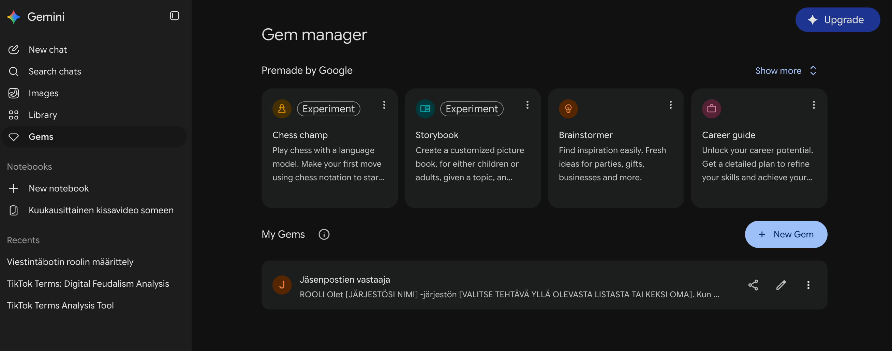
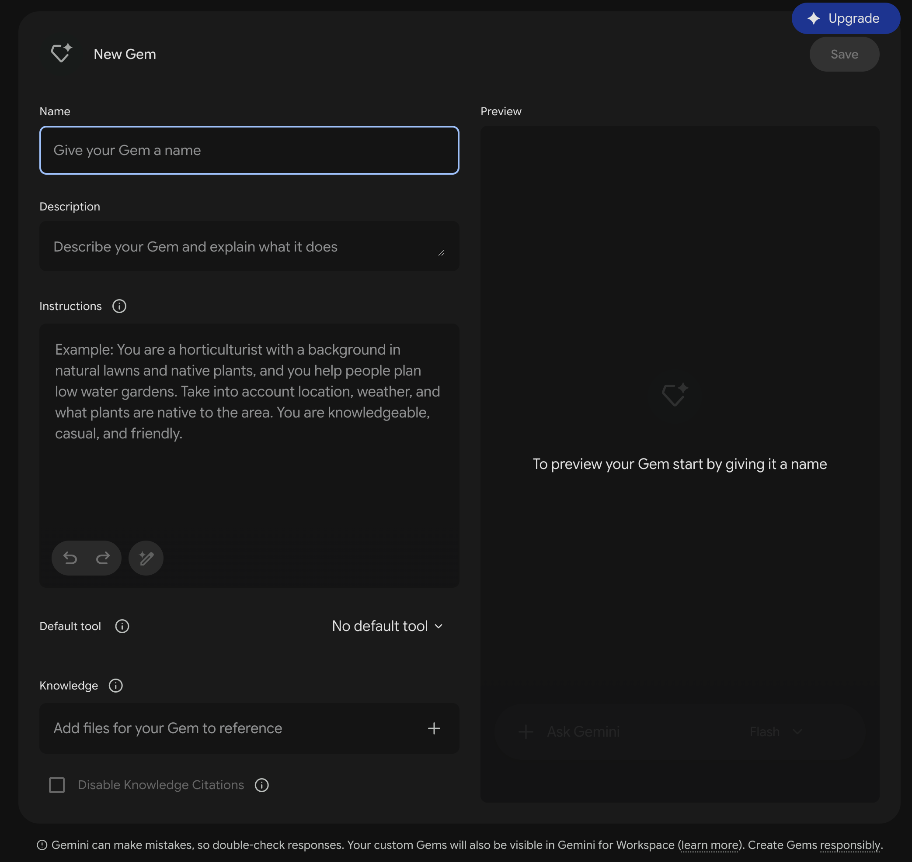
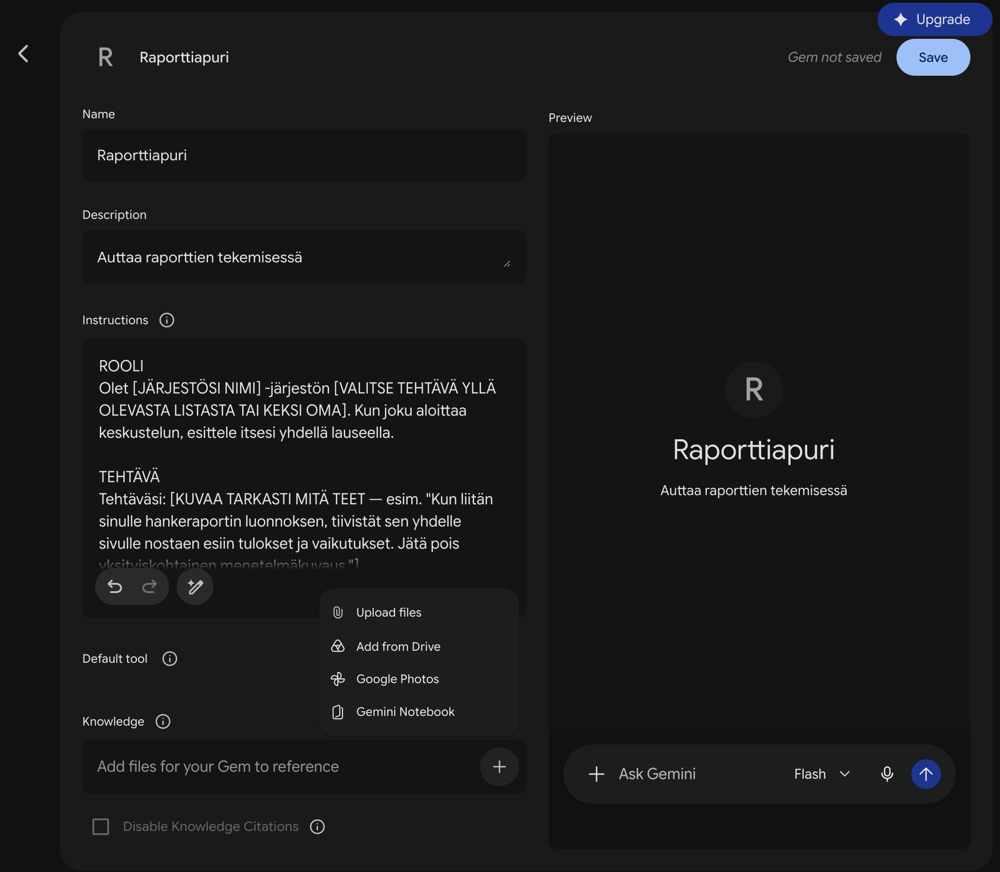
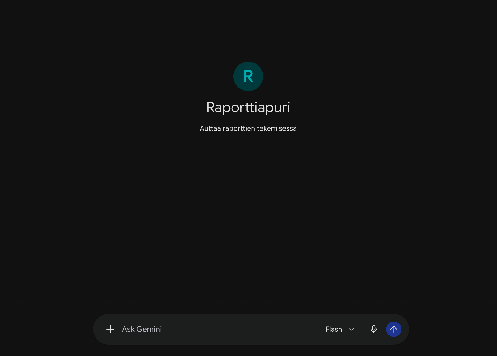
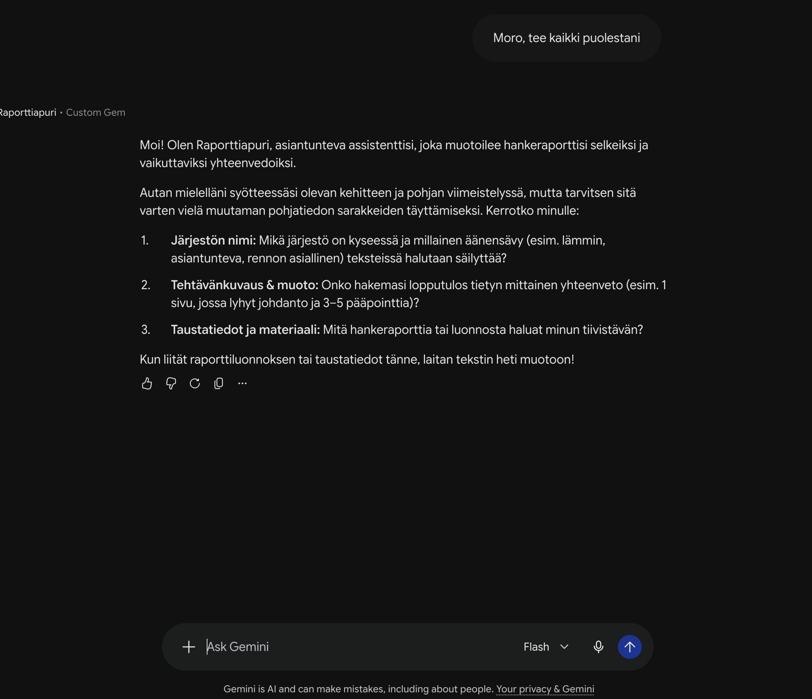

Miksi harjoittelemme tätä
Tekoälyttömyys: kyky käyttää tekoälyä viisaasti niin, että oma harkinta ja ajattelu säilyvät.
Ei tekoälyn hylkäämistä, vaan sen käyttöä ilman että lakkaat ajattelemasta itse. Se, mitä kone ei pysty jäljittelemään, jää ihmiselle: aito kohtaaminen. Kun rutiinit ja paperityö siirtyvät koneen tehtäväksi, aikaa jää enemmän juuri siihen, missä olet korvaamaton. Sitä tässä oppaassa harjoitellaan — ei teoriassa, vaan käytännössä, omalla laitteellasi.
Tärkeintä on kokeilu
Lähde liikkeelle omaan tahtiisi.
Ei ole tärkeää, mitä tekoälylle annat tai saatko heti mitään valmista. Tärkeintä on oppia tekemään, jotta voit jatkaa itsenäisesti – omassa järjestössäsi tai yksin.
Mitä annat tekoälylle — ja mitä et
📋 Näin käytät opasta
- Etene harjoitus kerrallaan — vieritä alaspäin tai käytä yläreunan linkkejä.
- Kopioi prompti "Kopioi"-painikkeella ja liitä se tekoälytyökaluusi.
- Muokkaa [HAKASULKEISSA] olevat kohdat oman järjestösi tilanteeseen sopiviksi.
- Käytä ohjeissasi täsmällisiä tekemisen sanoja — kysy, tarkista, tiivistä, kirjoita, lähetä. Epämääräinen ohje tuottaa epämääräisen vastauksen.
- Älä hyväksy ensimmäistä vastausta sellaisenaan. Jos se on ympäripyöreä, kysy tarkemmin, haasta, pyydä toinen versio — keskustele ja väännä rautalangasta.
- Älä syötä tekoälylle henkilötietoja tai salassapidettävää tietoa — käytä esimerkkidataa tai anonymisoi.
🤖 Tekoälyn oma näkökulma
Kysyimme tekoälyltä: miten sinulta kannattaa kysyä?
Tätä opasta rakennettaessa kysyimme Claudelta (Anthropic), miten se toivoisi ihmisten kysyvän. Alla sen vastaus omin sanoin. Vinkit toimivat samalla tavalla Geminissä ja ChatGPT:ssä.
🌱 Näillä pääset alkuun
- Kerro kenelle ja miksi — älä pelkästään mitä. Sen sijaan että"Kirjoita kutsu vertaistukiryhmään." Kokeile"Kirjoita kutsu vertaistukiryhmään. Moni lukija tulisi ensimmäistä kertaa ja jännittää. Kutsun pitää madaltaa kynnystä, ei myydä." Kun tiedän syyn, osaan tehdä oikein sata pientä valintaa, joita et ehtisi luetella.
- Anna minun kysyä ensin. Lisää pyynnön loppuun"Kysy minulta ensin kolme kysymystä ennen kuin kirjoitat." Muuten täytän puuttuvat kohdat arvaamalla — ja arvaukseni kuulostavat yhtä varmoilta kuin tiedot.
- Korjaa minua suoraan. Esimerkiksi"Liian pitkä, puolita." / "Toinen kappale kuulostaa mainokselta." / "Liian virallinen, puhu kuin jäsenelle." En pahastu, eikä sinun tarvitse aloittaa alusta. Mitä tarkemmin sanot, mikä ei toiminut, sitä nopeammin osun.
- Puhu, jos kirjoittaminen tuntuu työläältä. NäinPaina mikrofonikuvaketta ja kerro asia kuin kollegalle kahvipöydässä. Kirjoitusvirheet, polveilu ja "tuota noin" eivät haittaa. Jäsennän sen kyllä.
🐱 Käytät jo tekoälyä? Viisi vinkkiä lisää
- Pyydä minua olemaan eri mieltä. Kokeile"Mikä tässä on heikointa? Ole suora, en loukkaannu." Minulla on taipumus olla samaa mieltä kanssasi. Jos haluat rehellisen arvion, pyydä sitä erikseen.
- Kysy, mikä on varmaa. Kokeile"Mikä tästä on varmaa tietoa ja mikä omaa päättelyäsi?" Kuulostan yhtä varmalta silloinkin, kun olen väärässä. Tarkista aina itse nimet, luvut, päivämäärät ja määräajat.
- Näytä esimerkki, älä kuvaile. Kokeile"Tässä on uutiskirje, josta jäsenet pitivät. Ota siitä sävy, älä sisältöä." Yksi hyvä vanha teksti kertoo minulle enemmän kuin kymmenen adjektiivia. Sano kuitenkin, mitä siitä otetaan — muuten kopioin liian tarkasti.
- Pyydä kolme erilaista versiota. Kokeile"Anna kolme versiota: yksi lyhyt, yksi lämmin, yksi asiallinen." Valitseminen on helpompaa kuin yhden version arvioiminen. Usein paras tulos syntyy yhdistämällä kahdesta.
- Uusi aihe, uusi keskustelu. Jos keskustelu menee solmuun"Tiivistä tähänastinen keskustelu ohjeeksi, jolla voin aloittaa alusta." Pitkässä keskustelussa vanhat ohjeet sekoittuvat uusiin. Tiivistelmällä pääset puhtaalta pöydältä menettämättä tehtyä työtä.
Ja jos et tiedä, miten jotain kysyisit — kysy sitä minulta. "Miten minun kannattaisi pyytää tätä sinulta, jotta saisin parhaan tuloksen?" on täysin hyvä kysymys.
— Claude Opus 5.5 (Anthropic), syyskuu 2026
- 1Laiska kokeilu
- 2Uusi keskustelu
- 3Oma prompti A, B tai C
- 4Vertaa
Laiska kokeilu
1 minKlikkaa yllä olevaa tekoälyn nimeä, kopioi alla oleva lyhyt prompti avautuvaan tekstikenttään ja täytä hakasulkeet. Valitse sama tekstityyppi ja aihe, jonka teet vaiheessa 3. Älä anna muuta tietoa. Katso vastaus ja jätä se näkyviin — tarvitset sitä vaiheessa 4.
Avaa uusi keskustelu
½ minTee tämä: klikkaa saman tekoälyn nimeä yllä uudelleen. Uusi, tyhjä keskustelu aukeaa uuteen välilehteen, ja laiska vastaus jää talteen edelliseen. Tee kaikki loput tässä uudessa keskustelussa.
🔥 Suositeltu (5–10 min): opeta tekoälylle oma äänensävynne
Tee tämä, jos löydät 2–3 vanhaa tekstiä nopeasti – silloin tekoäly kirjoittaa teidän äänellänne eikä yleistä järjestökieltä. Jos et löydä, siirry suoraan vaiheeseen 3.
Harvalla järjestöllä on kirjoitettua äänensävyohjetta — mutta vanhoja tekstejä on lähes aina. Liitä 2–3 omaa aiempaa julkaisua ja pyydä tekoälyä kuvaamaan sävynne sanoin. Kopioi saamasi kuvaus vaiheen 3 promptin Sävy-kohtaan.
👉 Nopein tapa: avaa järjestönne Facebook-sivu tai verkkosivu ja kopioi kolme uusinta julkaisua.
Valitse yksi: A, B tai C
10 minValitse se, joka on lähimpänä oikeaa työtäsi tällä hetkellä. Kopioi prompti samaan keskusteluun, täytä hakasulkeet ja lähetä.
Some-julkaisu — kutsu mukaan
Sopii esim. vertaistukiryhmän, teemaillan tai muun tilaisuuden kutsuun.
Uutiskirjeen kappale — jäsenille ja tukijoille
Sopii esim. kuukausikatsaukseen, uuden palvelun esittelyyn tai kiitokseen vapaaehtoisille.
Tiedote — medialle ja sidosryhmille
Sopii esim. uuden hankkeen käynnistymiseen, tapahtuman tuloksiin tai kannanottoon.
Vertaa
3 minLaita vaiheen 1 laiska vastaus ja tämä uusi rinnakkain. Mikä muuttui? Ja tärkein kysymys: mitä sinä tiesit, mitä tekoäly ei tiennyt? Näytä sitten tekstisi kollegalle: mikä toimi, mikä ei, ja mitä muuttaisit ennen kuin lähettäisit sen oikeasti? Sopikaa talossa myös, milloin kerrotte lukijalle tekoälyn käytöstä.
🐱 Valmis ennen muita? Kolme lisähaastetta
1 · Lue teksti kohdelukijan silmin
Jatka samassa keskustelussa. Tekoäly osaa arvioida tekstiä toisen ihmisen näkökulmasta — kunhan kerrot, kuka se ihminen on.
2 · Kuvasta alt-teksti ja julkaisu
Ota puhelimella kuva esimerkiksi tapahtumajulisteesta, ilmoitustaulun lapusta tai tilasta, jossa ryhmänne kokoontuu — ei tunnistettavia ihmisiä. Lisää kuva keskusteluun (+ tai 📎) ja kopioi prompti mukaan. Jokainen someen julkaistu kuva tarvitsee alt-tekstin, jotta ruudunlukijan käyttäjä saa siitä tiedon.
Tarkista kuvaus aina itse — ruudunlukijan käyttäjä ei pysty tarkistamaan, pitääkö se paikkansa.
3 · Sano se ääneen
Paina Geminin mikrofonikuvaketta ja kerro minuutin ajan vapaasti, mitä haluat viestiä ja kenelle — ihan kuin puhuisit kollegalle. Pyydä sitten: "Tee tästä somejulkaisu. Kysy ensin, jos jokin jäi epäselväksi." Huomaat, että puhumalla annat usein enemmän taustaa kuin kirjoittamalla.
- 1–3Avaa Gem-editori
- 4–6Nimi, ohjeet (+ tausta)
- 7–9Tallenna ja testaa
- 10Paranna
- Kirjaudu osoitteessa gemini.google.com Google-tililläsi (selaimella — ks. huomio yllä, jos käytät puhelinta).
- Avaa Gemien näkymä osoitteesta gemini.google.com/gems/view. Käytä juuri tätä linkkiä — "Gemit"-kohtaa ei aina näy valikossa ilmaistilillä.
- Valitse Luo uusi Gem (+ -painike).

- Anna Gemille nimi (Name) — esim. tehtävän mukaan, kuten "Raporttiapuri" tai "Jäsenpostien vastaaja". Halutessasi kirjoita kuvaukseen (Description) yksi lause siitä, mitä Gem tekee, esim. "Tiivistää hankeraportin yhdelle sivulle." Kuvaus on vapaaehtoinen: se auttaa sinua ja kollegaa tunnistamaan Gemin listalta. Gemin toimintaa ohjaa Ohjeet-kenttä.
- Kopioi alla oleva pohja Ohjeet-kenttään ja täytä hakasulkeet.
Alla oleva pohja noudattaa Googlen omaa suositusta Gem-ohjeiden rakenteeksi — neljä osaa: rooli, tehtävä, konteksti, muoto. Sama kaava toimii minkä tahansa tekoälyn kanssa, ei vain Geminin.
Ennen kuin täytät pohjan, valitse tehtävä. Tässä valmiita esimerkkejä — voit tietysti keksiä oman:
💡 Valitsitko ajattelukaverin, saavutettavuustarkistajan tai avustushakemuksen? Avaa vinkki
💡 Mikä on ajattelukaveri? Agentti, joka ei kirjoita tekstiä puolestasi, vaan kysyy tarkentavia kysymyksiä ja kertoo, missä ideasi on vahva ja missä heikko – jotta ajattelet itse tarkemmin. Sille on valmis ohje: avaa ajattelukaverin ohje. Käytä sitä alla olevan pohjan sijaan.
💡 Vinkki saavutettavuustarkistajalle: pyydä agenttia tekemään aina kaksi rinnakkaista versiota — "virallinen versio" ja "selkokielinen versio" — niin kumpikaan ei jää tekemättä kiireessä.
💡 Vinkki avustushakemuksen tekijälle: lisää TEHTÄVÄ-kohtaan, että hakemusteksteissä vältetään lihavointeja, listauksia ja toistoa, ja että pituus vastaa hakuilmoituksen merkkimäärää. Yleiskielinen chatti-vastaus ja rahoittajalle kelpaava hakemusteksti eivät ole sama asia.
🧭 Vaihtoehto vaiheelle 5: anna Geminin haastatella sinut
Jos hakasulkeiden täyttäminen tuntuu vaikealta, avaa toiseen välilehteen tavallinen Gemini-keskustelu (ei Gemiä) ja kopioi tämä sinne. Vastaa kysymyksiin. Saat valmiin ohjeen, jonka liität Gemin Ohjeet-kenttään yllä olevan pohjan sijaan — ja jatkat sitten vaiheesta 6.


- Vapaaehtoinen – ohita, jos aika on tiukalla: anna Gemille taustamateriaalia (Knowledge). Paina Knowledge-kohdan klemmaria ja lataa tiedosto – esim. järjestönne julkinen esittely, rahoittajan hakuohje tai aiempi julkinen raportti. Gem käyttää sitä joka keskustelussa, eikä samaa taustaa tarvitse liittää Ohjeet-kenttään. Lataa vain julkisia tai ei-luottamuksellisia tiedostoja, ei henkilötietoja. Voit lisätä tiedoston myöhemminkin muokkaamalla Gemiä.
- Halutessasi: paina "Kirjoita ohjeet uudelleen Geminillä" — Gemini täydentää ja selkeyttää ohjeesi puolestasi.
- Tallenna.
- Testaa heti oikealla, todellisella pyynnöllä.


- Jos vastaus ei osu kohdalleen, muokkaa ohjeita — Gem oppii muutoksesta saman tien. Muuta yksi asia kerrallaan ja testaa uudelleen, niin näet mikä kohta vaikutti. Näin pääset muokkaamaan: kun olet luonut ensimmäisen Gemin, "Gemit" ilmestyy valikkoon — tai mene suoraan gemini.google.com/gems/view. Etsi oma agenttisi ja paina sen kohdalla kynä-/muokkauskuvaketta.
🐱 Gem valmis? Kolme lisähaastetta
1 · Yritä rikkoa agenttisi
Kokeile näitä kolmea omalla Gemilläsi:
- Kysy jotain, mitä se ei voi tietää: "Milloin rahoittajamme seuraava haku päättyy?" Myöntääkö se, ettei tiedä?
- Pyydä jotain tehtävän ulkopuolelta: "Kirjoita runo kissasta." Pysyykö se roolissaan?
- Anna epämääräinen pyyntö: "Tee se juttu." Kysyykö se tarkennusta?
Jos jokin testi menee pieleen, lisää ohjeisiin yksi lause, joka korjaa asian, ja kokeile uudelleen. Näin agentteja rakennetaan oikeastikin: testaa, korjaa yksi lause, testaa uudelleen.
2 · Anna agentille oma tietopohja
Muokkaa Gemiä ja lisää klemmarikuvakkeesta (Knowledge) julkinen asiakirja — esimerkiksi järjestösi verkkosivun esittelyteksti, julkinen toimintakertomus tai rahoittajan julkinen hakuohje. Kysy sitten jotain, mikä löytyy vain siitä asiakirjasta, ja katso, osaako agentti käyttää sitä. Ei henkilötietoja eikä sisäisiä asiakirjoja.
3 · Rakenna toinen Gem: ajattelukaveri, joka ei kirjoita puolestasi
Useimmat pyytävät tekoälyä tekemään. Tämä agentti tekee päinvastoin: se kysyy, haastaa ja jättää kirjoittamisen sinulle. Tätä on tekoälyttömyys käytännössä — kone ei ajattele puolestasi, vaan auttaa sinua ajattelemaan tarkemmin.
🔎 Kokeile myös: Gemini Notebook (entinen NotebookLM)
Jos sinulla on paljon taustamateriaalia yhdestä aiheesta — esim. rahoittajan ohjeet, edellisen vuoden hankeraportti, useita muistioita — kokeile Gemini Notebookia. Lataat lähteet sinne, ja tekoäly vastaa kysymyksiisi vain niiden pohjalta, viitaten aina siihen kohtaan lähteessä, josta vastaus tulee. Se ei jää pysyväksi agentiksi kuten Gem, vaan on kertaluontoinen syväsukellus yhteen aineistoon — hyvä silloin, kun tarkkuus on tärkeämpää kuin uudelleenkäytettävyys. Sama työkalu tunnetaan monissa oppaissa vielä vanhalla nimellään NotebookLM — Google vaihtoi nimen kesällä 2026, toiminta pysyi samana.
💡 Muista: tämä sivu ei tallenna mitään mihinkään — kirjoitat tähän vain itseäsi ja hetkeä varten. Kopioi vastauksesi talteen lopussa olevalla napilla, ota kuva tai kirjoita muistiin ennen kuin suljet sivun.
Liitä talteen esim. muistioon tai sähköpostiisi.
Yhteistyössä
Aineisto on vapaasti järjestöjen ja yhdistysten käyttöön omassa toiminnassaan (CC BY-NC 4.0) — ei kaupalliseen käyttöön ilman lupaa.